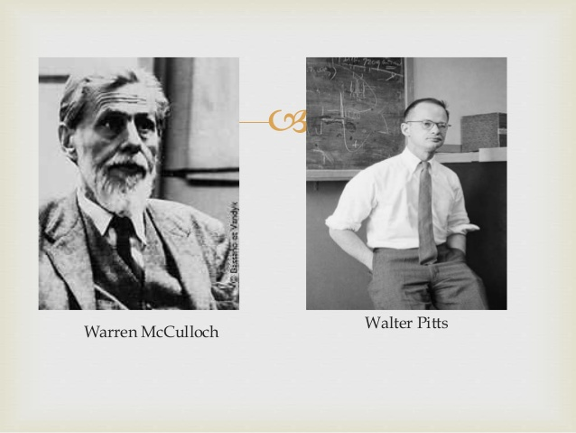
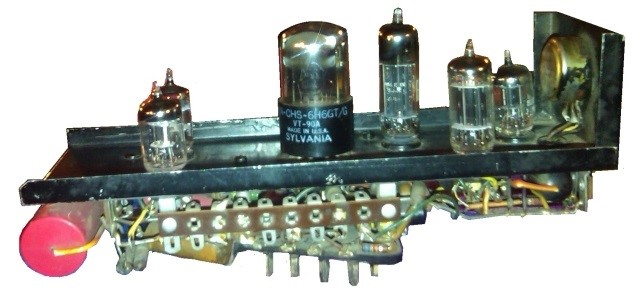
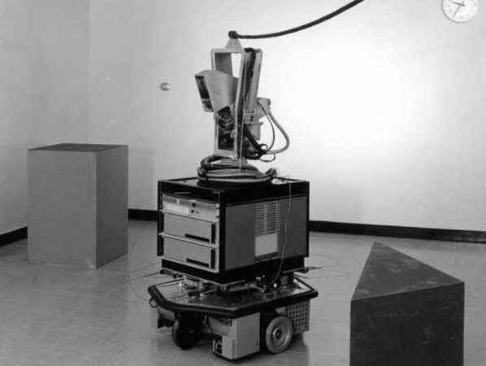
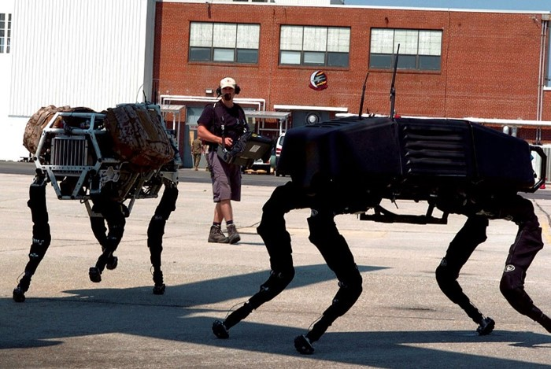
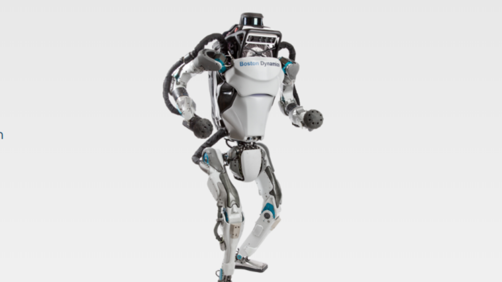

A linha evolutiva do pensamento das máquinas
Em 1943, Warren McCulloch e Walter Pitts apresentam um artigo que fala pela primeira vez de redes neurais, estruturas de raciocínio artificiais em forma de modelo matemático que imitam o nosso sistema nervoso.
Importante da época, trabalho de Claude Shannon em 1950 sobre como programar uma máquina para jogar xadrez com cálculos de posição simples, mas eficientes.
Em 1951, nasceu o SNARC, uma calculadora de operações matemáticas simulando sinapses, que são as ligações entre neurônios. O responsável foi Marvin Minsky. E em 1952, Arthur Samuel criou um jogo de damas no IBM 701 que consegue melhorar por conta própria e vira um desafio a altura de jogadores amadores.
Em 64, teve o primeiro chatbot do mundo, ELIZA, que conversava de forma automática imitando uma psicanalista, usando respostas baseadas em palavras-chave e estrutura sintática. E em 69 é demonstrado o Shakey, primeiro robô que unia mobilidade, fala e certa autonomia de ação. Ele era lento e cheio de falhas, mas funcionava.
Em 2005 a Boston Dynamics apresentou uma revolução na IA com aplicações em várias indústrias com o robô BigDog, capaz de se movimentar por terrenos de difícil acesso para humanos. Formas de cachorro e até humanoides estão cada vez melhores em mobilidade e inteligência.
Desde os anos 2000 até os dias atuais, essa tecnologia se desenvolveu de forma exponêncial. Diversos projetos de diferentes empresas como Google, Udacity, Tesla, AlphaGo, etc, já são capazes de entregar produtos que, até alguns anos atrás eram sonhos para um futuro distante. Essa tecnologia tende a crescer cada vez mais, e só o passar das décadas poderá dizer qual o seu limite.
